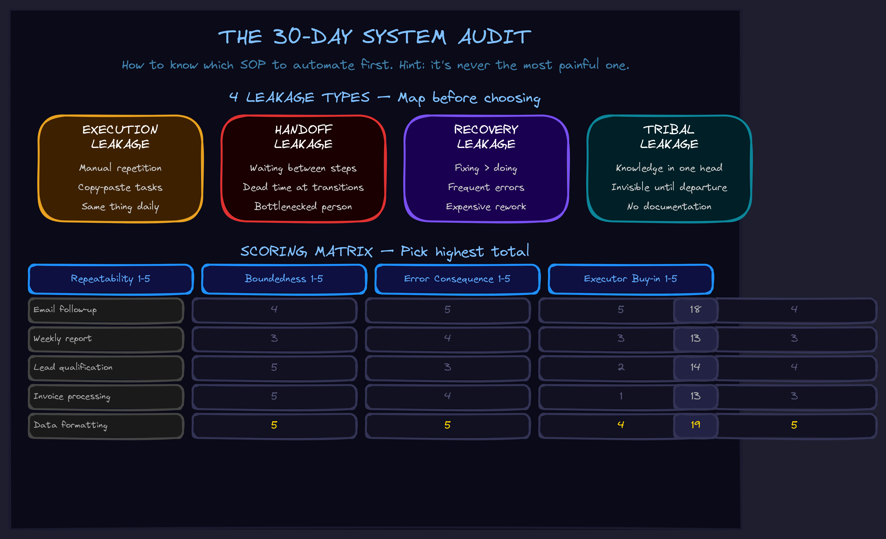

May 2026CompositionThe market
The 30-Day System Audit
How to know which SOP to automate first — and why the answer is never "the most painful one."

The Mistake Everyone Makes
When businesses start thinking about AI automation, they almost always pick the most painful workflow first. The thing that causes the most fires. The SOP everyone hates doing.
This is exactly backwards.
The most painful workflow is usually painful because it's complex, ambiguous, and context-heavy — the opposite of what AI agents handle well. Automating it first trains your team to distrust the system before it has a chance to prove itself.
The right SOP to automate first is not the most painful one. It's the most leaky one — the one that bleeds the most time and attention without producing compounding value.
What Makes a Workflow a Good First Candidate
A workflow is a good first automation target if it has:
- High repeatability. It happens more than once a week. Ideally daily or multiple times per day. One-off workflows don't compound.
- Bounded admissibility. You can describe the input → output clearly enough that a future AI could know whether it was done correctly. If you can't define "done," the AI can't either.
- Low consequence of error. Early automation will have edge cases. The first SOP should be one where a wrong output is visible, catchable, and fixable — not one where a bad output silently compounds into a disaster.
- Someone who wants it automated. Not just the owner — the actual executor. If the person doing the work doesn't want it automated, it won't get adopted.
The Four Leakage Types
Before picking a workflow, map where the leakage is. There are four kinds:
1. Execution Leakage
The work gets done, but takes longer than it should because someone is doing steps manually that could be automated. The classic: copy-paste between tools, manual data entry, reformatting outputs.
Signal: "I spend 2 hours a day on this and it's always the same thing."
2. Handoff Leakage
The work stops while waiting for someone. The handoff between steps has dead time — someone finishes their part and has to wait for the next person to pick it up.
Signal: "The bottleneck is always waiting for [person X]."
3. Recovery Leakage
Things go wrong, and fixing them takes more time than the original work. Errors are frequent and expensive to repair.
Signal: "We spend more time fixing mistakes than doing the work correctly in the first place."
4. Tribal Leakage
The knowledge of how to do the workflow lives in someone's head. When that person is unavailable, the workflow slows or stops. This is the most invisible leakage — it's usually not even recognized as a problem until that person leaves.
Signal: "Only [name] knows how to do this."
The 30-Day Audit Process
Here's how to run the audit before choosing which SOP to automate first:
Days 1–7: Map, Don't Fix
Write down every recurring workflow in your business. Not what you wish you had — what actually happens on a weekly basis. Include: frequency, who does it, how long it takes, and what "done" looks like.
Don't try to optimize yet. Just map.
Days 8–14: Find the Leakage
For each workflow, answer: which type of leakage dominates? Look for workflows where:
- The same task happens 3+ times per week
- Someone says "I just do this same thing over and over"
- The handoff between people has visible dead time
- Errors require rework that takes more time than the original task
Days 15–21: Score Against the Criteria
Score each candidate workflow against the four criteria:
Repeatability: 1–5 (1 = annual, 5 = daily) Boundedness: 1–5 (1 = ambiguous output, 5 = clearly testable) Error consequence: 1–5 (1 = catastrophic, 5 = catchable and fixable) Executor buy-in: 1–5 (1 = reluctant, 5 = requesting it)
The workflow with the highest total score is your first candidate — not the most painful one.
Days 22–30: Build the Admissibility Boundary
Before you build anything, write down the admissibility boundary. This is the question the AI must be able to answer before it acts:
Is this transformation licensed by enough visible structure to be safely performed?
For a workflow, that means: What are the inputs, what is the output, what are the conditions under which the output is valid, and what are the edges where this transformation could cross into adjacent systems?
If you can't answer those questions, the workflow isn't ready to automate. You need to stabilize the process before you can automate the process.
Why This Matters More Than the Tool
Every AI automation tool promises to make your workflow run itself. Most of them can — if the workflow is well-defined enough to be automated. The hard part is not the AI. The hard part is knowing which workflow to pick and making sure it's actually ready to be bounded.
The 30-day audit is how you know. It's also how you know whether your business is a candidate for a Transformation engagement: if you can't score any workflow above a 15 after 30 days of mapping, the business probably isn't ready for automation yet. That's not a failure — it's information. And it's better to know that before you spend six months trying to automate chaos.
The Connection to the 7 Disciplines
The audit process above is Admissibility Engineering applied to business workflows — asking "is this operation bounded enough to be safely performed?" before building anything. You can't Concentrate an agent on a boundary you haven't defined. And you can't Emergence a loop that has no admissibility to begin with.
The seven disciplines aren't just for AI coding systems. They're the framework for any complex, self-improving operational system — including the system running your business.
Want help running the 30-day audit for your business? We walk leadership teams through the entire process — from mapping workflows to scoring candidates to defining admissibility boundaries.
Prompt Engineering — say the right thing to the AI. Context Engineering — show the AI the right information. Tool Engineering — give the AI the right actions. Harness Engineering — run the right loop. Admissibility Engineering — define the boundary before acting. Concentration Engineering — keep the AI inside the boundary. Emergence Engineering — make the loop compound.
The 30-day audit is steps 5 and 6 applied to business operations: defining the admissibility boundary, then keeping attention inside it.